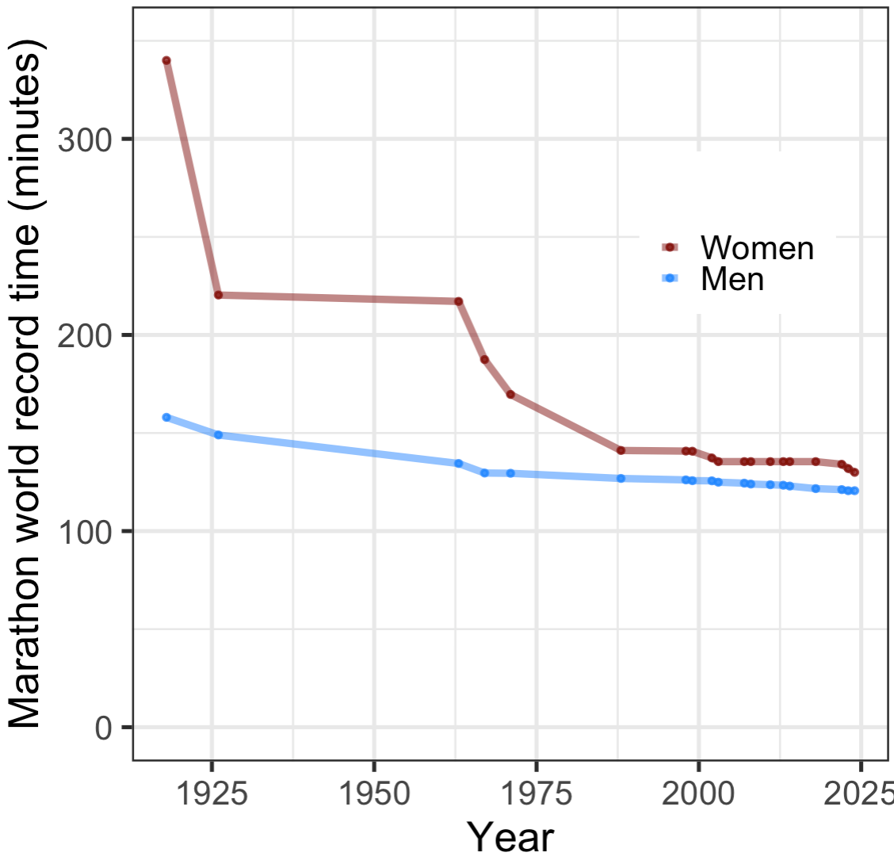
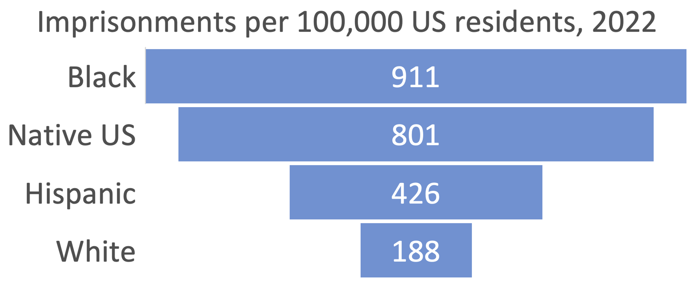
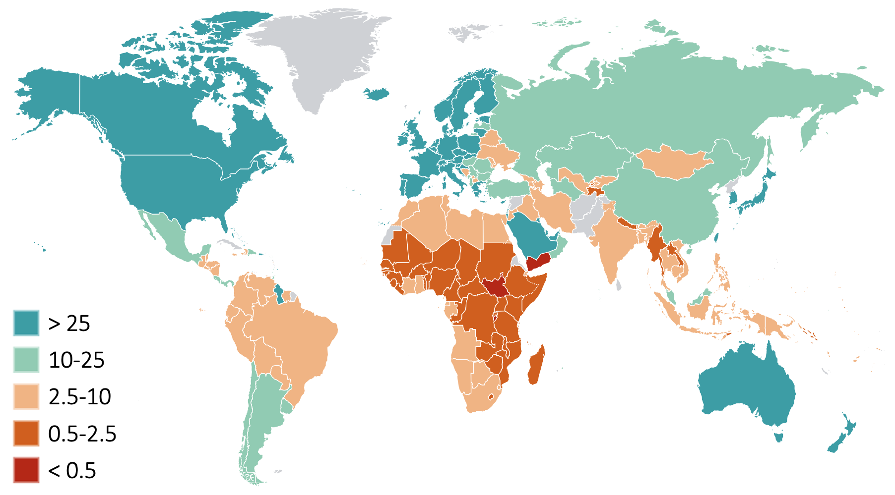
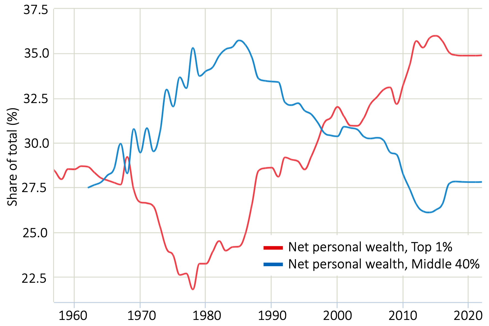
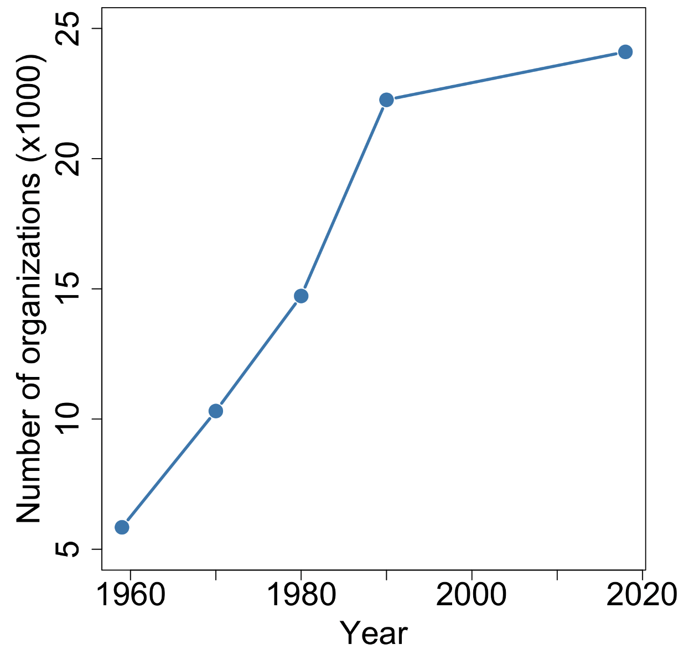
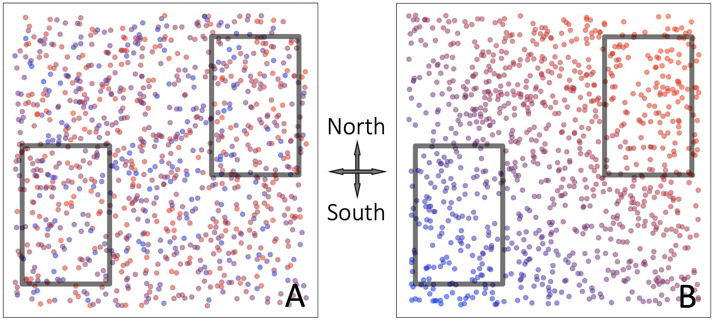
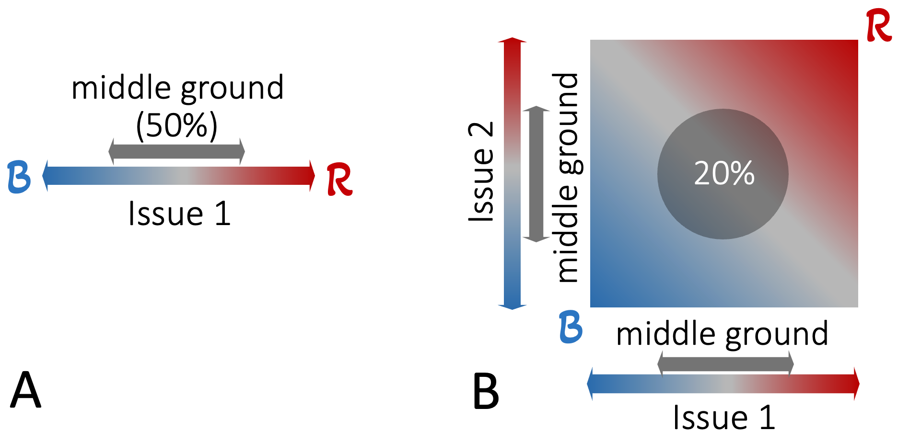
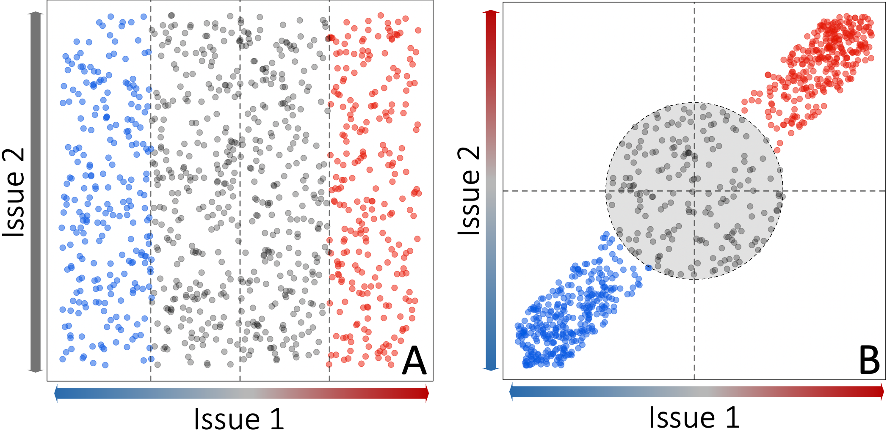
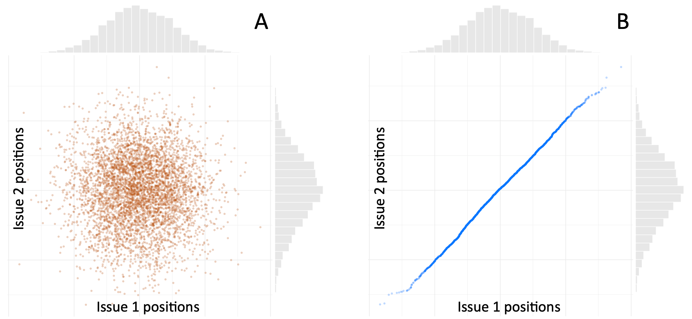
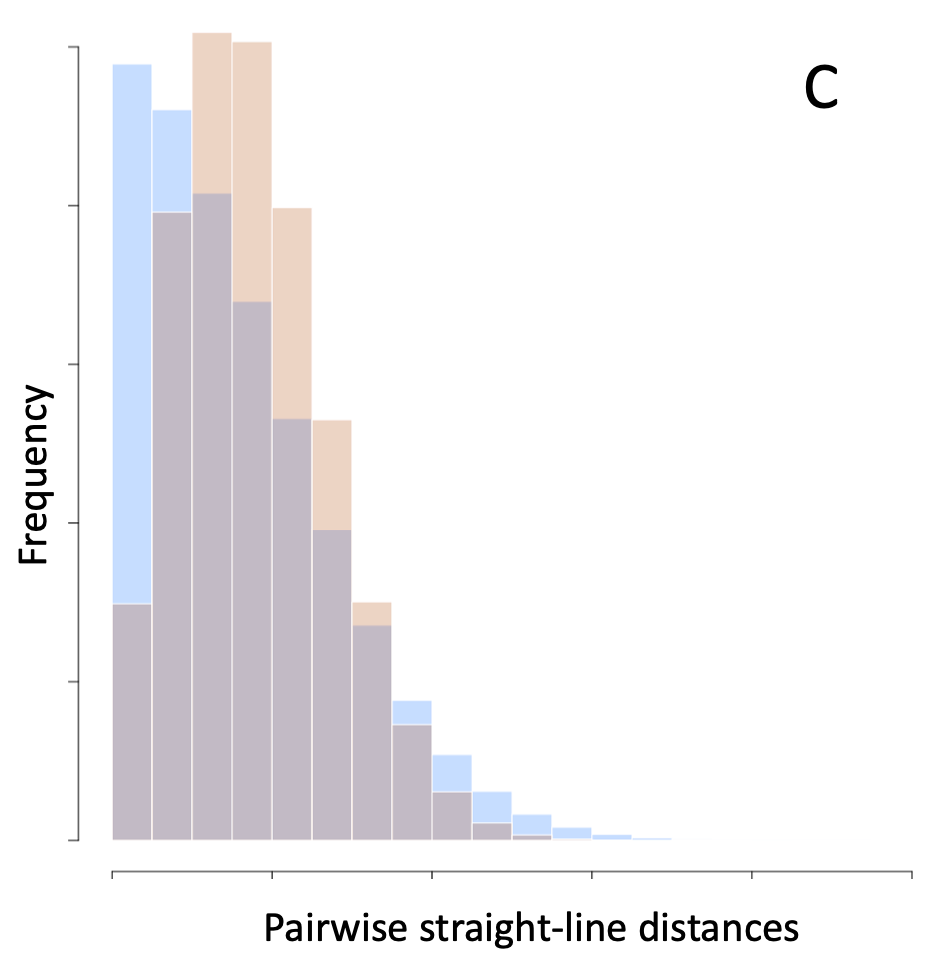

13 Appendix 2: Gender, Race, Wealth, & Politics: The Most-Common forms of Runaway Polarization in the West
Polarization impacts every aspect of our lives. But four types of inequality have dominated discourse in the West: women’s opportunities, race, politics, and money. Many outstanding books and articles have been written on these topics. I cannot do the issues justice here. But to provide some context for the discussions in the main text, in this appendix I provide very brief summaries and illustrative examples.
13.1 The Remarkable Persistence of the Glass Ceiling
In 2017, American women earned roughly 60% of all bachelor’s and master’s degrees and about 50% of doctoral degrees, but they represented less than 5% of the CEOs, and less than 25% of senior-level positions in Fortune 500 and S&P 500 companies 1.
According to 2025 data from “UN Women”, the United Nations body dedicated to the empowerment of women around the world: “At the current rate, gender equality in the highest positions of power will not be reached for another 130 years.” 137 Compare this trend to the rate at which women have been catching up men in marathon races 138 (see Figure A2.1).

Figure A2.1 Convergence of men and women’s official best marathon running times over the past century.
The post-1967 rapid improvement in women’s world-best marathon times marks the period when women started concerted efforts to beat the worldwide ban on women running marathons, culminating in the first official women’s marathon (in Germany) in 1973 139. The pre-1960s large differences in men and women’s best times were due to a lack of opportunity for women, not an intrinsic lack of ability. That opportunity is still not available to all women around the world. Nonetheless, men and women’s best marathon times today are only different by less than 10%.
The male-female opportunity gap seems to be closing in a variety of fields, but very slowly. For example, according to the World Economic Forum’s 2024 Global Gender Gap Report, women’s participation in the Science, Technology, Engineering, and Mathematics (STEM) workforce is growing steadily in 62 of 73 countries monitored, but only at a rate of about 3% per decade 140.
The persistent societal inequalities between men and women impact half the world’s population and span all races and socio-economic groups, highlighting how RAP can impact anybody. In contrast, racial polarization in the west started with colonialism and has a very different history and dynamics 2,3.
13.2 Racial Polarization in the US
Racism in its broadest sense, i.e. discrimination based on kinship, caste, etc. can be traced back to the earliest human societies. The modern form of racism 4 started with colonialism and slavery and persists in many forms today (covert, internalized, interpersonal, institutional, structural). Issues arising from racial discrimination in the West are in news daily, so perhaps do not require a summary here. But I want to note that race-related issues intersect political, economic and other forms of polarization through factors such as segregation, and access to education, housing, and employment opportunities (see 5–9). To take a specific example, in Partisan Nation, the political scientists Paul Pierson and Eric Schickler trace the origins of the current political polarization in the US to a national (as opposed to regional) civil rights movement slowly emerging in the decades after the Civil War:
[…] federalism and the fragmentation of power at the national level enabled white supremacy to be institutionalized throughout much of the US for generations after 1865. […] The racial realignment that began in the 1930s, […] turned out to be the critical first step in the creation of ideologically cohesive parties that offer voters dramatically different visions for the country’s future. 10 [pp.11-12]
Pierson and Schickler go on to explain that the expanded scope of the national government in enforcing civil rights in education, employment, voting, and housing, and of policy battles over that expansion, amplified the nationalization and polarization of politics in the US. It also led to the growth and nationalization of interest groups and institutionalized lobbying.
As an example of a racial disparity with clear interactions with education 11–13, earnings 14–16, policy 141, etc., consider US incarceration rates by racial group, as presented in Figure A2.2 (Bureau of Justice data 17).

Figure A2.2. In the US, people of color are imprisoned at far higher rates than whites. Bar lengths indicate relative imprisonment rates. Numbers indicate counts per 100,000 US residents.
Systemic segregation of poor Blacks into resource-deprived, isolated communities stands out as a particularly pernicious and multi-faceted driver of racial inequality in America 18,19. For example, on average, Black children attend schools that are 67% black or Hispanic, and where 63% of the students qualify for subsidized lunches 20. In US metropolitan regions with more than 200,000 residents, 81 percent were more segregated as of 2019 than they were in 1990 21. Segregation doesn’t just reduce people’s access to resources and opportunities, it also has profound emotional and psychological effects on both sides of dividing lines 22,23.
Given that so much of today’s racial inequalities stem from the generational effects of colonialism and slavery, and the difficulties of escaping deeply ingrained systems 24, there are strong arguments to be made in favor of reparations 6,25,26.
13.3 Examples of Economic Polarization
Because of the effect of government policies on the economy, and the effects of economic strife and income inequality on political sentiments, political and economic polarization are often inter-dependent. But variations in local sources of income (e.g. tourism, mining, farming, manufacturing, etc.) and historical events (e.g. empires, and wars won/lost) lead to variations from country to country 142 (e.g. relatively low levels of political polarization in Japan 27). But, in broad-brush terms, very similar observations can be made about most Western countries.
The role of self-reinforcing feedback loops in creating and amplifying economic inequalities has been studied in diverse settings and for many years. I mentioned Cumulative Causation, the Matthew Effect, Didier Sornette’s work on market crashes, and Thomas Piketty’s data on cumulative capital returns in Chapter 2. Path Dependence 28,29 is a related theory that emphasizes the role of past events in exponential growth (i.e. positive feedback) economic processes. Self-reinforcing economic and political feedback loops are widespread (e.g. between campaign contributions and economic policy 30,31). Recent research by Elizabeth Elder suggests such dynamics can lead to single companies dominating local government in ways that hinder local development and robust democratic institutions 32.
Wealth/economic inequality is common both within 33,34 and across nations 143, and also among individuals worldwide 144. Figures 2.3 and 2.4 present two illustrative examples.

Figure A2.3. Disparities in 2025 per capita Growth Domestic Product (GDP) across the world 145. Color key is in thousands of US dollars. Gray indicates no data. Per capita GDP in the richest nations is approximately 100 times that of the poorest countries, such as South Sudan, and Yemen. According to a 2025 estimate by the World Bank, in 2025, 808 billion people across world (roughly 1 in 10) lived on less than $3 US Dollars per day 146.

Figure A2.4. The rich get richer. The net wealth of the top 1% of the US population is now greater than the net wealth of the 40% of Americans with above average but below top-10% wealth 35147. See Thomas Piketty’s books 36,37, and Matthew Desmond’s Poverty By America 38 for more details.
13.4 A Very Brief Summary of Political Polarization
Political polarization has been the subject of intense scrutiny and debate over the past quarter century. Because of their different histories and geographies, details vary across countries (consider the UK, Germany, Israel, India, and the United States as examples). Although the relative impact of the many factors shaping politics remains hotly debated, there is an emerging general consensus, which I summarize here (for brevity, I will focus on US examples).
In pre-industrial times, all across the world, the vast majority of people lived in highly-homogeneous, tightly-knit, small, sparse, rural communities 148. Industrialization led to a massive migration to cities, and an associated loss of the old, rural, social bonds and norms (unwritten rules, customs and conventions). In their place, people developed new bonds centered around common goals and beliefs: trade unions, mutual-help societies, communal worship, child-rearing support, dealing with local affairs, and so on 39,40.
For several decades (roughly the first half of the twentieth century in the US), a general trend towards increased wealth interspersed with violent shocks (World Wars, the Great Depression), motivated people to value social solidarity and strong ties. But increasing wealth brought with it a move away from “survival mode” thinking, and a desire for greater personal freedoms, most notably in terms of race, women’s rights, and religious sentiment 39,41.
In the US, a long sequence of civic jolts (pro-civil rights legislation in the 1960s, publication of Rachel Carson’s Silent Spring in 1962, growing opposition to the Vietnam war, the Pentagon Papers in 1971, and the Watergate scandal 1972-74), led to a gradual loss of trust in government. In parallel with – and in response to – these events, political parties became increasingly centralized, which in turn led to the emergence of nationally-organized lobbying bodies (see Figure A2.5 149) 10,42. Americans have responded to these changes by increasingly defining themselves in terms of their personal aspirations and interests, and cocooning themselves into small, highly homogeneous communities 43,44.

Figure A2.5. The rise of the number of national organizations representing special-interest groups in the USA.
Political polarization (PP) often has distinct ideological and emotional components 45,46. Emotional polarization undermines representative democracy by making policy issues less important than winning 47,48. Ideological polarization is often stronger among the political elite (elected politicians, committed activists, and associated professionals). But it also affects and is affected by the electorate 49,50.
Another important driver of political polarization is the alignment of sentiments along multiple dimensions into archetypal identities (e.g. attitudes towards abortion and gender roles). As we will see later, PP is also amplified when people sort into more homogeneous groups (e.g. neighborhoods, book clubs, religious communities). See Figure A2.6 for an example.
Figure A2.6. Political polarization in Oregon. As of May 2025, thirteen right-leaning counties (red) in rural Oregon have voted to secede from the left-leaning metropolitan counties on the west coast and join Idaho instead. Oregon has not had a Republican governor since 1987. At the population level, east and west Oregonians disagree on everything from federal economic and foreign policies to abortion, LGBTQ+ rights, schooling, drug laws, and gun control. Source: StAnselm, Wikimedia, June 2024. See the Wikipedia entry “Greater_Idaho_movement” and the campaign’s web site (https://www.greateridaho.org/) for more information.
Finally, I would be remiss not to note that, in most countries, political and economic polarization interact in multi-faceted and complex ways. For example, in his 2012 book Affluence and Influence 51, the political scientist Martin Gilens concludes: “The obstacles to enhancing representational equality in America are considerable, both because political reform is always hard to achieve and because economic resources and the political influence that accompanies them continue to shift toward the already advantaged.”
The relative importance of sorting, issue-alignment, identity-formation, and the centralization of political power in national parties has been much debated 48,52,53; each contribute to political polarization, but often to a different degree in different countries 54 . Below I discuss the role of positive feedback loops in these phenomena.
13.5 How Sorting, Issue-Alignment, and Group-Identity Contribute to Polarization
Sorting, issue-alignment, and group-identity formation are three overlapping and inter-related processes that contribute to political polarization. They also create conditions that facilitate Runaway Polarization, as the three examples bellow illustrate. Importantly, all three processes also create Us and Them groups, tipping issue-based debates into emotion-driven we-the-good versus the-evil-enemy wars.
Sorting refers to the process of like-minded people clustering together into physical spaces such as neighborhoods, or into organizational compartments such as political parties, activist/campaign groups, book clubs, churches and so on. What constitutes “like-minded” involves human psychology, so it is often complex and multi-dimensional, analogous to how we choose life-partners. Figure A2.7 presents examples of two geographical neighborhoods (gray rectangles) before and after sorting (panels A and B respectively).

Figure A2.7. How sorting creates homogeneous cliques. Panel A shows the distribution of residences (colored disks) in a hypothetical city prior to sorting. Shades of red-purple-blue indicate a characteristic undergoing polarization, for example right-left political leaning. Sorting happens when people choose to live near – or more generally, prefer to interact more closely with – like-minded others, as in panel B.
In the above example, note how sorting creates two highly homogeneous (nearly all blue, or nearly all red) neighborhoods. Such homogeneous communities act as echo-chambers that amplify group biases through self-reinforcing feedback loops. As Bill Bishop put it in his ground-breaking 2009 book The Big Sort 39: “Mixed company moderates; like-minded company polarizes. Heterogeneous groups restrain group excesses; homogeneous communities march toward the extremes.”
Like sorting, group-identity formation also creates clusters of like-minded people. In its simplest form, group-identity can be defined by a single issue, such as support for a sports-team. But, more often, a group-identity arises as a result of sorting along multiple dimensions, as embodied by the US Feminists for Life activist group. As illustrated in Figure A2.8, as the number of issues that define a group increases, the fraction of people occupying the middle-ground on all issues shrinks. Political parties exploit this tendency when they offer highly polarized stances along multiple lines, leading voters to sort themselves based on one or few motivating factors.

Figure A2.8. Multi-issue identities shrink the middle ground. A, for an issue with evenly distributed scores, the middle 50% of the score-range will include the middle 50% of the scores. B, combinations of issue scores result in a smaller proportion of the total distribution (here, roughly 20%) falling in the middle 50% of the score-range (because points in the extra space on the sides of the middle ground are polarized in one or more issues).
Issue alignment occurs when people’s stances on different issues become correlated. Like sorting and identity-formation, issue alignment also clusters people into highly homogenous groups. But, in this case, the underlying process through which clustering happens is different. Issue-alignment can arise when a single motivating factor drives opinions on several issues. For example, if people feel they are not benefitting from the status-quo, they are likely to vote against everything that maintains business-as-usual. In cases like this, the end-points of issue-alignment and identity-formation are essentially the same.
Figure A2.9. illustrates a slightly different path to alignment 150. Here, people who have strong opinions on one issue, make a point of taking correlated positions on additional issues, for example to widen their appeal, or to form alliances with other groups. In the example in Figure A1.8, initially (panel A), people with strong opinions on Issue 1 (red and blue disks) have no preferences regarding Issue 2. But, later (panel B), they adopt Issue 2 opinions similar to their positions on Issue 1. As a result of this process, the number of people occupying the middle-ground is reduced, similar to the identity-formation example above. As with sorting and identity-formation, alignment results in two highly homogeneous echo-chambers that will drive further polarization.

Figure A2.9. Issue-alignment shrinks the middle-ground. Panel A shows the distribution of opinions before alignment. Colored disks indicate people with strong opinions on Issue 1. The gray middle 50% of Issue 1 opinion scores include 50% of the population. Panel B show the opinion distribution following alignment. As with identity formation, the gray zone, representing the middle-50% of the Issue 1 and Issue 2 opinions, now comprises only ~20% of the population.
When opinions on multiple issues align, whether through sorting, identity-formation, or alignment, people tend to become less tolerant, more biased, and feel angrier at the “Other” group 48,56.
Finally, note an important distinct between sorting and alignment. In itself, sorting does not change the level of polarization across the population as a whole. Instead, it creates conditions that increase the likelihood of further polarization. In contrast, issue alignment leads to polarization in and by itself. We saw this effect in Figure A1.8, but that example involved a particular type of alignment in which stances on Issue 2 became aligned with already polarized stances on Issue 1. To emphasize the intrinsically polarizing effect of alignment, Figure A2.10 shows a different alignment process in which the population-wide distributions of the stances on Issues 1 and 2 do not change.
Each plot point in Panel A represents the stance of an individual on two issues of interest. We see that there is no correlation between people stances on Issues 1 and 2. The distributions of people’s stances on two issues are shown by the histograms at the top and right of the scatter plot. In Panel B, I have swapped the Issue 2 stances of individuals in Panel A to make issue stances highly correlated, as indicated by the nearly straight-line distribution of the blue dots in the scatter plots. The histograms at the top and right of the figure confirm that the population distributions of stances on Issues 1 and 2 are identical in panels A and B (because I swapped issue 2 values among individuals without changing any values).
Now consider Figure A2.10C, which shows the distributions of pairwise straight-line distances between points in each panel (ochre histogram for Panel A, blue histogram for Panel B). We see that after the two issues become aligned, the pairwise point distances among individuals become more concentrated at the two ends of the distribution, indicating greater polarization.


Figure A2.10. Alignment increases polarization. A, example population with uncorrelated stances on two issues. Individuals are represented by dots in the scatter plot, and the population distributions of stances on the two issues are shown as histograms above and to the right of the scatter plot. B, the population in panel A after swapping Issue 2 stances for values more closely correlated with Issue 1 stances. Note that the population distributions of stances on the Issues have not changed (see histograms), but the scatter plot of the points now forms a near-straight line. C, distribution of pairwise straight-line distances among points in each of panels A (ochre) and B (blue). More distances are concentrated at the thigh and low extremes, indicating increased polarization.
13.6 References
1. Chisholm-Burns, M. A., Spivey, C. A., Hagemann, T. & Josephson, M. A. Women in leadership and the bewildering glass ceiling. Am. J. Health. Syst. Pharm. 74, 312–324 (2017).
2. Andrews, K. The New Age of Empire: How Racism and Colonialism Still Rule the World. (Bold Type Books, 2021).
3. Sanghera, S. Empireworld: How British Imperialism Shaped the Globe. (PublicAffairs, Hachette Book Group, 2024).
4. Seth, V. The Origins of Racism: A Critique of the History of Ideas. Hist. Theory 59, 343–368.
5. Anderson, C. White Rage. (Bloomsbury, 2016).
6. Coates, T.-N. The Case for Reparations. The Atlantic (2014).
7. Alexander, M. The New Jim Crow. (New Press, 2010).
8. Coates, T.-N. Between The World And Me. (Spiegel & Grau, 2015).
9. Baldwin, J. The Fire Next Time. vol. 1993 Edition (Vintage International, 1962).
10. Pierson, P. & Schickler, E. Partisan Nation: The Dangerous New Logic of American Politics in a Nationalized Era. (University of Chicago Press, 2024).
11. Wolf Harlow, C. Education and Correctional Populations. https://bjs.ojp.gov/content/pub/pdf/ecp.pdf (2003).
12. David, L. M., Bozick, R., Steele, J. L. & Miles, J. N. V. Evaluating the Effectiveness of Correctional Education: A Meta-Analysis of Programs That Provide Education to Incarcerated Adults. https://www.rand.org/pubs/research\_reports/RR266.html (2013).
13. Eriksson, E. Greater Access to Education Reduces Rates of Incarceration. Ournal Polit. Econ. 119, 821–888 (2018).
14. Taibbi, M. The Divide: American Injustice in the Age of the Wealth Gap. (Spiegel & Grau, 2014).
15. Pager, D. The Mark of a Criminal Record. Am. J. Sociol. 108, 937–975 (2003).
16. Western, B. The Impact of Incarceration on Wage Mobility and Inequality. Am. Sociol. Rev. 67, 526–546 (2002).
17. Carson, E. A. & Kluckow, R. Prisoners in 2022. Bur. Justice Stat. Stat. Tables NCJ 307149 (2023).
18. Nowicki, J. M. K-12 Education: Student Population Has Significantly Diversified, but Many Schools Remain Divided Along Racial, Ethnic, and Economic Lines. https://www.gao.gov/products/gao-22-104737 (2022).
19. Massey, D. S. & Denton, N. A. American Apartheid: Segregation and the Making of the Underclass. (Harvard University Press, 1993).
20. Massey, D. S. Still the Linchpin: Segregation and Stratification in the USA. Race Soc. Probl. 12, 1–12 (2020).
21. Menendian, S., Gambhir, S. & Gailes, A. Twenty-First Century Racial Residential Segregation in the United States. https://belonging.berkeley.edu/roots-structural-racism (2021).
22. Enos, R. D. The Space between Us: Social Geography and Politics. (Cambridge University Press, 2017).
23. Pandian, A. Something Between Us: The Everyday Walls of American Life, and How to Take Them Down. (Redwood Press, 2025).
24. BlackDeer, A. A. Violence, Trauma, and Colonialism: A Structural Approach to Understanding the Policy Landscape of Indigenous Reproductive Justice. J. Trauma Dissociation 24, 453–470 (2023).
25. Feagin, J. R. Documenting the Costs of Slavery, Segregation, and Contemporary Racism: Why Reparations Are in Order for African Americans. Harv. BlackLetter Law J. 20, 49–81 (2004).
26. Henry, L. & Ryder, M. The Big Payback: The Case for Reparations for Slavery and How They Would Work. (Faber & Faber, 2025).
27. Solis, M. Japan’s Consolidated Democracy in an Era of Populist Turbulence. https://www.brookings.edu/wp-content/uploads/2019/02/FP\_20190227\_japan\_democracy\_solis.pdf (2019).
28. Arthur, W. B. On Competing Technologies and Historical Small Events: The Dynamics of Choice under Increasing Returns. (1983).
29. Arthur, W. B. Increasing Returns and Path Dependence in the Economy. (Michigan University Press, 1994).
30. Teso, E. Influence-Seeking in U.s. Corporate Elites’ Campaign Contribution Behavior. Rev. Econ. Stat. 107, 685–696 (2025).
31. Harvey, A. Is Campaign Spending a Cause or an Effect? Reexamining the Empirical Foundations of Buckley v. Valeo (1976). Supreme Court Econ. Rev. 27, 67–111 (2019).
32. Elder, E. M. Company Towns: Single-Industry Dominance and Local Government Capacity. Br. J. Polit. Sci. 55, 1–18 (2025).
33. Chetty, R. et al. The fading American dream: Trends in absolute income mobility since 1940. Science 356, 398–406 (2017).
34. Wilkinson, R. G. & Pickett, K. E. Why the world cannot afford the rich. Nature 627, 268–270 (2024).
35. Chancel, L., Piketty, T., Saez, E. & Zucman, G. World Inequality Report 2022. https://wir2022.wid.world/ (2022).
36. Piketty, T. Nature, Culture, and Inequality: A Comparative and Historical Perspective. (Other Press, 2024).
37. Piketty, T. Capital in the Twenty-First Century. (Harvard University Press, 2014).
38. Desmond, M. Poverty by America. (Crown, New York, 2023).
39. Bishop, B. The Big Sort: Wht the Clustering of Likeminded America Is Tearing Us Apart. (First Mariner Books, 2009).
40. Putnam, R. D. Bowling Alone: The Collapse of American Community. (Simon and Schuster, 2000).
41. Sennett, R. Together: The Rituals, Pleasures, and Politics of Cooperation. (Yale University Press, 2012).
42. Pierson, P. & Schickler, E. Madison’s Constitution Under Stress: A Developmental Analysis of Political Polarization. Annu. Rev. Polit. Sci. 23, 37–58 (2020).
43. Levine, P. We Are the Ones We Have Been Waiting For: The Promise of Civic Renewal in America. (Oxford University Press, 2013).
44. Arceneaux, K. & Johnson, M. Changing Minds or Changing Channels? Media Effects in the Era of Expanded Choice. (University of Chicago Press, 2013).
45. Enders, A. M. Issues versus Affect: How Do Elite and Mass Polarization Compare? J. Polit. 83, 1872–1877 (2021).
46. Iyengar, S., Lelkes, Y., Levendusky, M., Malhotra, N. & Westwood, S. J. The Origins and Consequences of Affective Polarization in the United States. Annu. Rev. Polit. Sci. 22, 129–146 (2019).
47. Finkel, E. J. et al. Political sectarianism in America. Science 370, 533–536 (2020).
48. Mason, L. Uncivil Agreement: How Politics Became Our Identity. (University of Chicago Press, 2018).
49. Seimel, A. Elite polarization — The boon and bane of democracy: Evidence from thirty democracies. Elect. Stud. 90, 102801 (2024).
50. Zingher, J. N. & Flynn, M. E. From on High: The Effect of Elite Polarization on Mass Attitudes and Behaviors, 1972–2012. Br. J. Polit. Sci. 48, 23–45 (2015).
51. Gilens, M. I. Affluence & Influence: Economic Inequality and Political Power in America. (Princeton University Press, 2012).
52. Fiorina, M. P., Abrams, S. J. & Pope, J. C. Culture War? The Myth of a Polarized America. (Longman, 2005).
53. Abramawitz, A. I. The Great Alignment: Race, Party Transformation, and the Rise of Donald Trump. (Yale University Press, 2018).
54. Schweighofer, S., Schweitzer, F. & Garcia, D. A Weighted Balance Model of Opinion Hyper-polarization. J. Artif. Soc. Soc. Simul. 23, 5 (2020).
55. Schweighofer, S. & Garcia, D. Raising the Spectrum of Polarization: Generating Issue Alignment with a Weighted Balance Opinion Dynamics Model. J. Artif. Soc. Soc. Simul. 27, 15 (2024).
56. Roccas, S. & Brewer, M. B. Social Identity Complexity. Personal. Soc. Psychol. Rev. 6, 88–106 (2002).